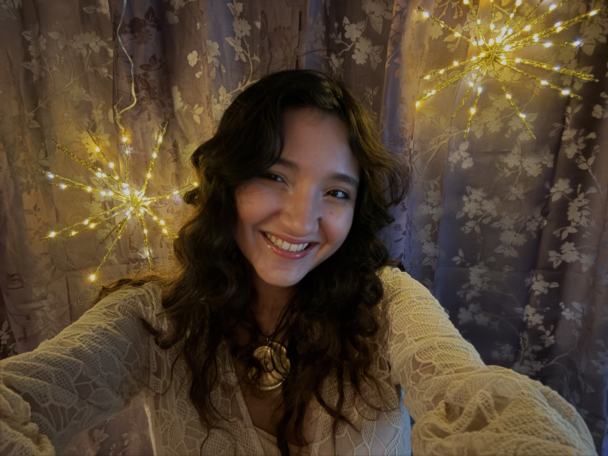

Welcome
Welcome to my Skills Portfolio for DCDA 40833. This site showcases the work I've completed throughout the semester, demonstrating my growth in digital culture and data analytics.
Each page represents a different lab assignment, building from foundational web development skills to data visualization and interactive mapping.
About Me

Who I am: I am Ailicec Valdez, a senior Environmental Science and Digital Culture & Data Analytics double-major. One interesting fact about me is that I've studied abroad in South Africa.
My interests: My interest and hobbies include photography and conservation education, as well as some graphic design. What drew me to DCDA was the variety of classes that could broaden my personal and career skills.
What I hope to learn: I hope to gain skills in python and code. I also believe humanities and science go hand-in-hand and I know that through DCDA I am able to expand on both.
My Work
Click on any card below to view that lab assignment. Focus of actual labs may change over the course of the semester:
AI Tool Evaluation
Lab 2This lab allows beginner developers to analyze the usage of AI tools through a critical perspective on AI generated images. Through experimentation with two AI softwares (Leonardo.AI and Adobe Firefly) users will question AI outputs, learning about functionality and the product outcome.
Tufte Critique
Lab 3This lab encourages users to analyze beyond what is shown. Through a critical approach toward data visualization, we will explore the unique features that make an infographic clear and interesting to the viewers. Students will learn to apply in-class knowledge to evaluate and critique what worked and what didn’t, and how those features changed the quality of the information presented.
Tableau Visualization
Lab 4This lab enhances skills in data visualization, giving developers an opportunity to explore data analysis from a dataset of our choosing. Through the public software of Tableau Public, students will explore the variety of features available to break patterns in our dataset. Creating a visualization that is easy and comprehensible to the audience.
Vibe Coding
Lab 5This lab will encourage developers to utilize AI-assisted code generator programs, or Vibe coding, to create a portfolio enhancement. Through creative flexibility and AI aid, students will explore AI capabilities as they collaborate with the installed software to understand and analyze the generated code.
Python Mapping : Little Elm, TX
Lab 6This is a skillful lab that combines our knowledge in web mapping with custom cartographic design. Through a customized hometown locations dataset and a personal Mapbox basemap design, students will create an interactive mapping system personalized to their life. This assignment focuses on creative design, technical methods, and the integration of vibe coding to create a script that will combine our components using Python.
Semester Reflection
What I learned: This semester helped me gain proficiency in several digital platforms, particularly GitHub and VS Code. Each received assignment helped me grow as a beginner python developer and challenged me in a unique way. Lab 1 introduced me to design methods and HTML/CSS formatting. Lab 2 helped me become aware of essential tools such as AI and encouraged me to analyze how different software functions. Lab 3 and Lab 4 helped me build skills in digital visualization and recognize how design choices affect viewer interpretation. Lab 5 introduced me to AI-assisted coding and allowed me to work with a tool that explains the processes behind Python programming. Finally, Lab 6 allowed me to combine multiple software tools while expressing creativity through interactive mapping. Keeping an open mind helped me stay focused on my work, and although I encountered many challenges with Python, I was pleased with the knowledge and skills I gained from completing these lab assignments.
Challenges I overcame: This semester has definitely been a challenge for me. Coding has never been one of my strong suits, but as the semester has progressed, I am happy to say that I have been able to understand these methods better. I had never had the opportunity to create a website or work with software like VS Code and GitHub before, and I believe that is where most of my weaknesses came from this semester. I decided to work through these issues by seeking guidance with both my professor/peers and AI help. I’ve been able to reflect and analyze the feedback I've received and continue to learn about the technique behind python. One important thing I have learned throughout the semester is that there is rarely only one solution. Python can be a complex language to understand, but with practice it gradually becomes easier.
How I grew: I can honestly say that this course has thoroughly helped me understand what DCDA is all about. I loved how every assignment was catered to improving our skills for both digital culture and data analytics. I can excitedly say that I’ve been able to understand both through hands-on applications and through my own creative expression. I am excited to continue to grow in these areas and I would love to be able to create a final project that reflects on both.
Looking ahead: Moving forward, I plan to continue exploring the different skills Python offers. I will continue to focus on improving my technical skills and practicing the Python language through different exercises, while also learning from the feedback and explanations provided through AI tools. I was pleased with the knowledge and skills I gained from my lab assignments and I’m excited to begin my final project.